Over Doctorine
We bouwen de check die een API-team vertelt of agents en ontwikkelaars hun API na een wijziging nog kunnen gebruiken. Doctorine is jonge software, en zegt dat ook.
Agents werden de belangrijkste lezer van API-docs. Niemand controleert wat ze ermee doen.
Op docs die Mintlify host, groeiden agents van 15,2% van het verkeer begin 2026 naar 66% in juli, volgens het halfjaarrapport van Mintlify. Een client genereren uit een spec kost een agent nu seconden. Wat schaars blijft, is bewijs dat de docs, SDK's en tools nog kloppen voor deze release.
Daarom verkoopt Doctorine bewijs, geen generatie: een gratis rapport op de docs die je hebt, dan een gate in je CI, met gegenereerde interfaces als upgrade.
Bron: Mintlify, The state of docs traffic, 2026 midyear report, 29 juli 2026. mintlify.com

Vijf regels waarmee we bouwen.
- 01Succesvol gebruik is het resultaatEen API is zo goed als de taak die een ontwikkelaar of agent ermee kan afronden. Dat meten we.
- 02De goedgekeurde release is de eenheidDocs, SDK's, CLI, MCP-server en skills horen bij één release, en bewegen samen of helemaal niet.
- 03Haal review weg, voeg het nooit toeEen tool die pull requests toevoegt om te reviewen, wordt niet gebruikt. Een check die een stap weghaalt, wel.
- 04Begin waar teams zijnBij de docs die ze al hosten en de spec die ze al hebben, zonder eerst te migreren.
- 05Zeg wat nog niet af isDoctorine is jonge software. We noemen voorbeelden voorbeelden en early access early access.
Wat live is, en wat nog bij designpartners zit.
Live
De Docs Analyser op doctorine.dev, het gehoste docsportaal, TypeScript-, Python- en Go-SDK's, de CLI, MCP-server, Agent Skills, releasebewijs en EU-residentie voor het kerndatavlak.
Gratis rapport
De agenttaken-evaluatie, gedraaid op je publieke docs en spec en naar je toegestuurd.
Met designpartners
De release gate in je CI en pull requests voor spec-herstel.
Praat met de mensen die het bouwen.
Mail pilot@doctorine.xyz met de API die je uitbrengt en de release die het moeilijkst in lijn te houden is. Een publieke of geanonimiseerde spec is genoeg om te beginnen.